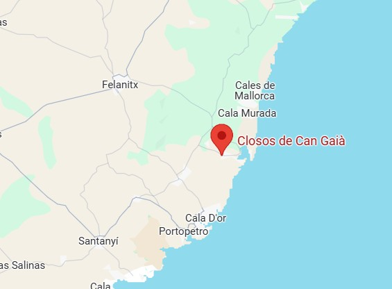

Descripció
Poblat naviforme de l’edat del bronze, amb cases comunals i evidències d’activitat agrícola.
Ubicació
El jaciment dels Closos de Can Gaià és un poblat de navetes (navetiformes) de l'edat del bronze, fase naviforme. Està situat en el llevant de Mallorca, als encontorns de Portocolom (terme de Felanitx).t

Imatges